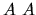
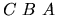
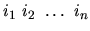

| The JustaPox Language |
A new programming language is being designed. One of its new features is related to the specification of arrays. The language deals only with arrays of integers, and there are two ways of specifying new arrays:
B is [3]
D is 
SEQ is [1] A [4] 
For the aforementioned specification of A and B, we have C with size 4, D with size 2, and SEQ with size 14.
Assignments are expressed in the language by the following statement:
For example,
In other words, for the specification
the assignment
is said to be consistent if and only if S is a sequence
where
The language designers want you to cooperate with the compiler construction effort: you have to write a program that receives as input a collection of array specifications and a sequence of assignments, and produces as output the list of inconsistent assignments.
An array specification has the following format:
either [k] where k is a strictly positive integer (there may be spaces between k and its surrounding brackets)
or <id>, where <id> is the name of a previously specified array.
The sequence of di's is terminated by a period.
An assignment sepcification has the following format:
<id> = .
<id> is the name of a previously specified array and ij are positive integers. The list of ij's is terminated by a period.
In both types of specifications, an arbritrary number of spaces or empty lines can appear
between the tokens.
A is [1]. B is [3]. C is A B. SEQ is [1 ] A [4] B A. A = 10. B = 1 2 3. C = 1 1 2 3 4. SEQ = 1 10 1 1 1 1 2 2 2 10. SEQ = 1 10 1 1 1 1 1 2 3 9.
C = 1 1 2 3 4. SEQ = 1 10 1 1 1 1 1 2 3 9.